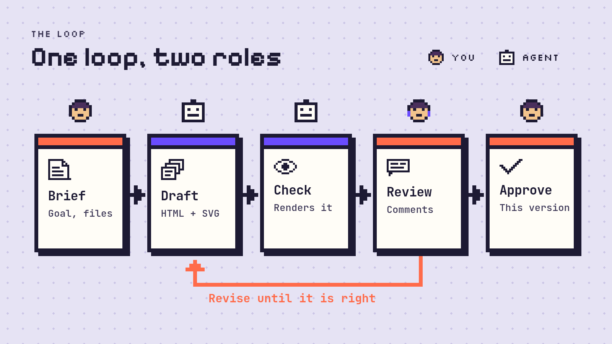

A LITTLE CONTEXT, RIGHT THERE
The slide lives inside the pill.
Hover to unfold it. Move away, and it settles back into the title.
One loop, two rolesSaved

One surface. The title stays in place.
A LITTLE CONTEXT, RIGHT THERE
Hover to unfold it. Move away, and it settles back into the title.

One surface. The title stays in place.